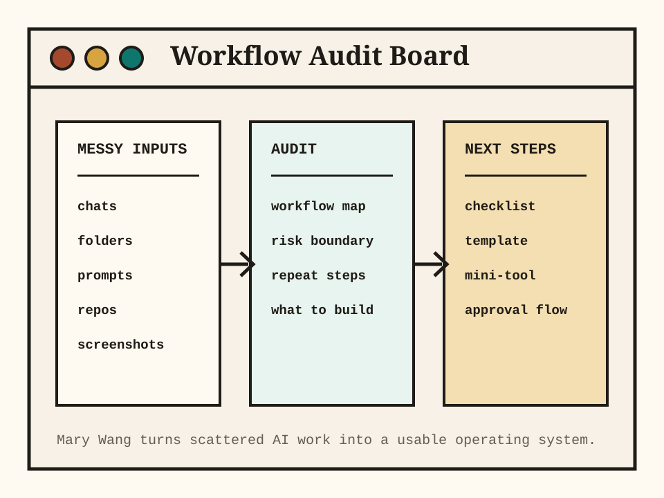

Messy folders
Files, screenshots, exports, spreadsheets, docs, and notes that need structure.
AI workflow operator for non-technical founders
Mary Wang audits messy folders, repos, prompts, chats, and AI tool workflows, then turns them into clear next steps, mini-tools, or repeatable operating docs.

First paid offer
For founders and small teams who already use AI but still feel their work is scattered, inconsistent, or too hard to repeat.
Delivered within 48 hours after materials are confirmed.
WeChat Pay or Alipay available after scope confirmation by email.
What to send
Files, screenshots, exports, spreadsheets, docs, and notes that need structure.
Prompts, chats, repeated steps, draft outputs, and manual review loops.
Downloaded projects, templates, automations, or tools you do not know whether to trust.
Public proof assets
Boundaries
Start here
Email a short description, one sample input, and the output you wish you had. Mary will confirm whether it fits the audit, then send WeChat Pay or Alipay payment details by email.
939172168@qq.com